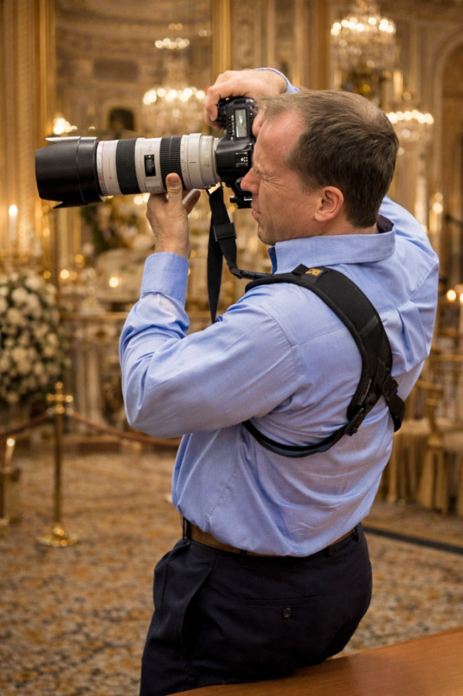
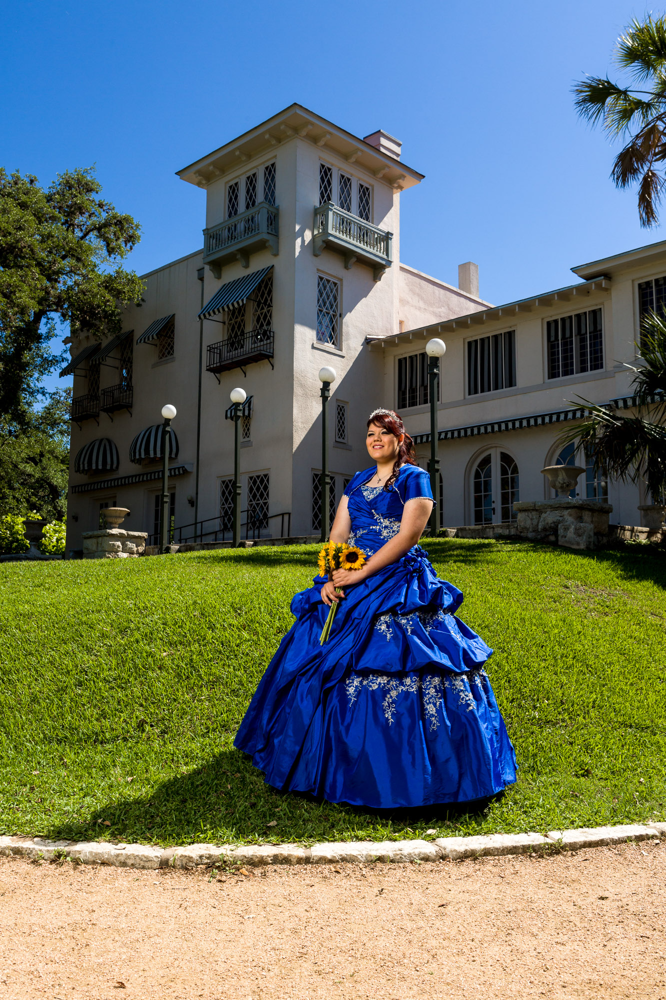
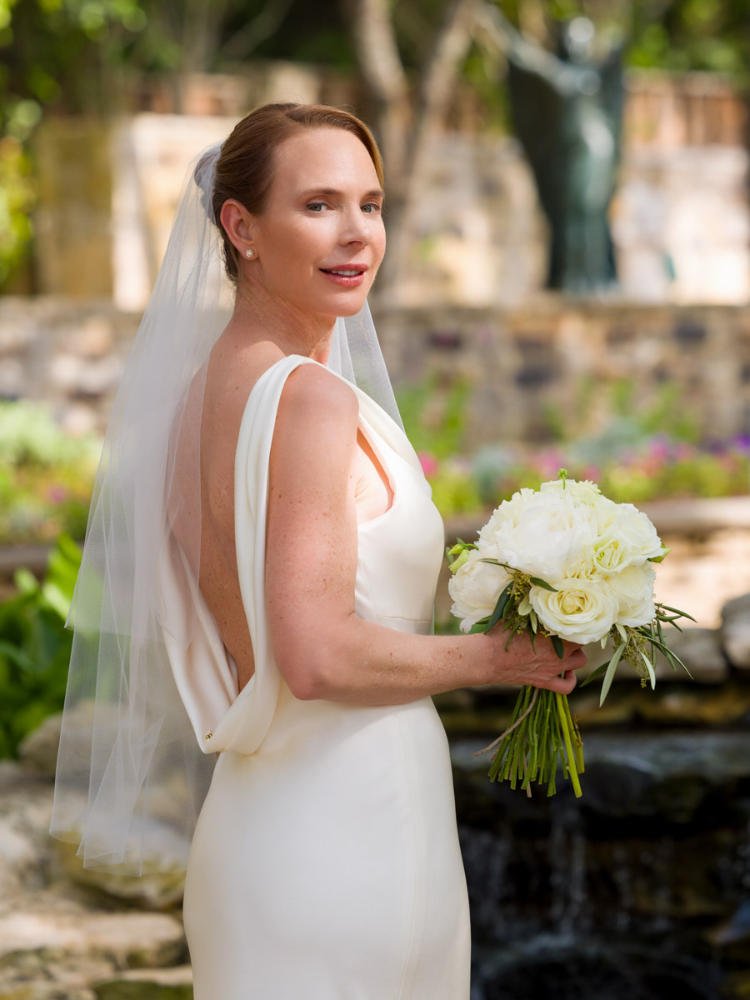
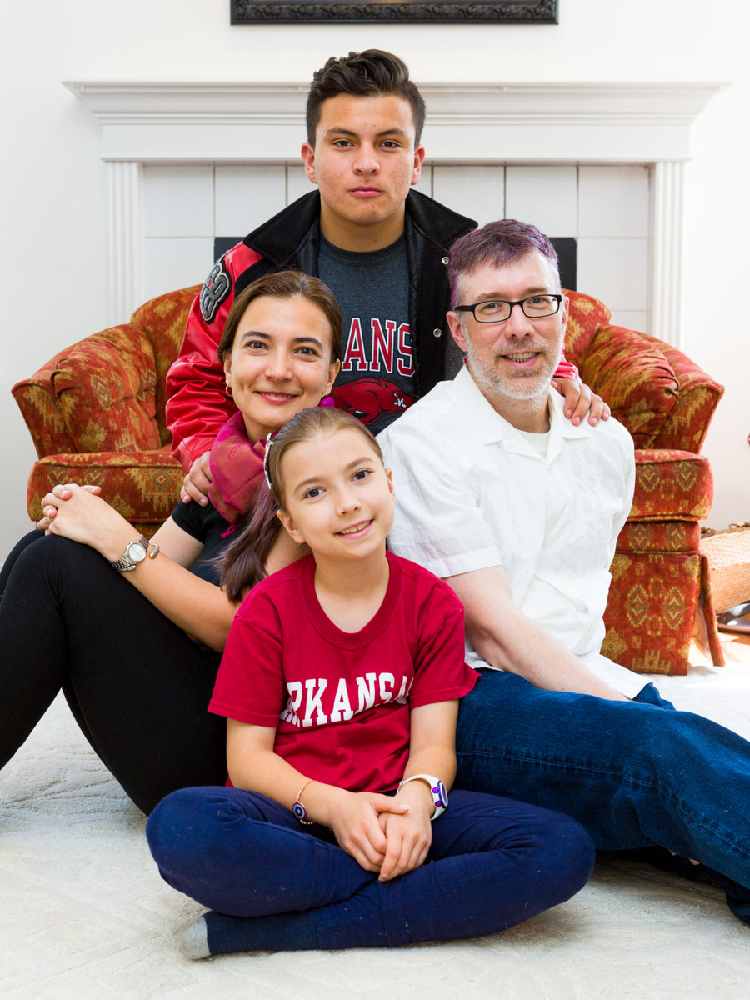
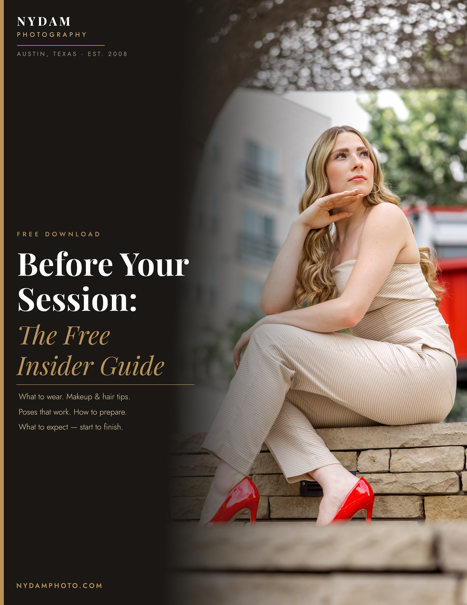

From the first nervous breath to the last toast, from the opening welcome to the closing keynote, from the quiet moments in between to the energy that fills the room — we document every heartfelt emotion as it happens.
We preserve life's meaningful moments so they can be remembered, shared, and cherished for years to come.


We are a team of storytellers dedicated to capturing the heart of your moment, not directing it, not staging it, but being present for it. From candid smiles to grand celebrations, our collective expertise ensures every detail is thoughtfully documented. We make your experience enjoyable and your memories unforgettable.

Lead Photographer · Founder
Arlen earned his PhD in English and started shooting professionally at the same time, they were never separate pursuits. He reads a room the way a close reader reads a page: looking for what's true, what's fleeting, what will still matter twenty years from now. The one your guests will never notice, until they see the photos.
Co-Founder · COO · Second Photographer
Tanya runs the operations and strategy that make every session seamless, from your first inquiry to your final gallery. On wedding days she steps behind the camera, bringing a second perspective that captures what one photographer can't be in two places to catch. The reason everything works the way it should.

Assisting Photographer · On-Site Support
For larger weddings and multi-location events, we bring a trusted assisting photographer who knows our style and standards. Every team member we work with has been personally vetted, so the level of care never changes, no matter the size of your day.
"Arlen has become our family's dedicated photographer and an important part of our lives. From LinkedIn photos to prom, senior portraits, college milestones, and our wedding, he has been there for every meaningful moment." , Sonya Forster · Family, Portraits & Weddings
Seven specialties, each with its own language.
One unwavering standard of care.

You'll forget the centerpieces. You won't forget the look on his face.
Your wedding day moves fast. Arlen moves with it, preserving every quiet glance, every burst of joy, from the ceremony to the last dance. No stiff posing. Just your story, told honestly.
Some moments are sacred. They deserve a photographer who understands that.
Weddings, Baptisms, First Communions, Confirmations, across the Diocese of Austin. A respectful, unobtrusive approach that honors the liturgy and lets the sacred moment breathe.
First impressions close deals. Make yours count.
Clean, confident headshots and team photos that look like you at your best, delivered promptly and ready for LinkedIn, press kits, and company websites. Your brand deserves images that actually work.

From the opening welcome to the closing keynote, every handshake, every keynote moment, every burst of celebration worth preserving.
Short events, half-day, or full-day options. Corporate galas, product launches, conferences, and community gatherings.

They're only this age once. Make sure you remember it.
Team portraits, action photography, and season packages for youth leagues, competitive clubs, and high school programs across Austin, Round Rock, Hutto, and Pflugerville.

Not a studio. Not a timer. Just you, real light, and time to breathe.
In-home sessions, graduation portraits, and family photography in natural Austin settings, at a pace that feels entirely your own.

She's been dreaming of this day her whole life. So have you.
Every detail, the dress, the waltz, the family gathered around her, captured with the same care and artistry Arlen brings to weddings. Candid emotion, beautiful portraits, every meaningful moment.
Event Photography
Select the option that best fits your event. Each link opens Arlen's calendar directly so you can check availability and book online.
"Arlen knew exactly what to do. He produces the results you want, approachable, trustworthy, confident. You will be very happy with the artistry he brings." , John Hellerstedt · Executive Portraits & Headshots
Arlen's eye for quality helped my company execute an amazing photoshoot. The process was smooth and professional from start to finish, and the results exceeded our expectations.
Woody Robertson, Corporate & Brand Photography


Free Download
Poses that actually work, what to wear, how to prepare for your session, what to expect before and after — everything that makes the difference between photos you love and photos that just exist.

Select the session type that fits your day. Each link takes you to the session page where you can explore the details and book directly.
Not sure which session fits?
Use the "Let's Talk" link, Arlen will help you find the right fit. Most clients hear back within 24 hours.
Provide your details below and we'll reach out to schedule a free consultation. No pressure, just a conversation.
Whether you're planning a wedding in the Hill Country, a baptism in the Diocese of Austin, a corporate event downtown, or a family portrait session at sunset, we want to hear from you.